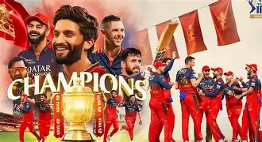

|  |
Full Name: Royal Challengers BangaloreCaptain: Rajath patidarCoach: Sanjay BangarHome Ground: M. Chinnaswamy Stadium, BangaloreIPL Titles: 1Manager: Vijay Sankeshwar |
|---|
Royal Challengers Bangalore (RCB) is a franchise cricket team based in Bangalore, Karnataka, India. The team was founded in 2008 and is one of the original eight teams that participated in the inaugural season of the Indian Premier League (IPL). RCB is owned by United Spirits, a subsidiary of the British beverage company Diageo. RCB has had a mixed record in the IPL, having reached the finals three times (in 2009, 2011, and 2016) but has yet to win the championship. The team is known for its strong batting lineup, which has featured some of the biggest names in cricket, including Virat Kohli, AB de Villiers, and Chris Gayle. The team's home ground is the M. Chinnaswamy Stadium in Bangalore, which is known for its high-scoring matches and enthusiastic crowd support. RCB has a passionate fan base, often referred to as the "RCB Army," and is known for its vibrant team colors of red and black. The team has also been involved in various charitable initiatives and community outreach programs.
NEXT